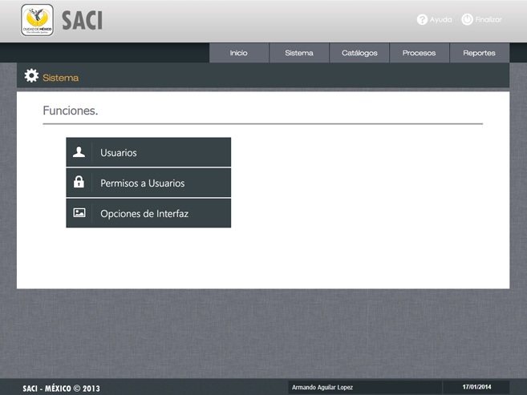
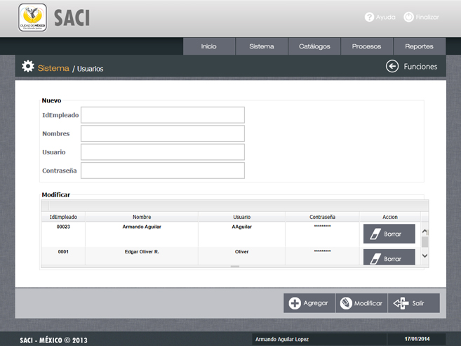

/ Usuarios.

Objetivo.
Esta pantalla tiene por objeto registrar a un nuevo usuario con su contraseña para poder ingresar al sistema, y cambiar la contraseña de un usuario ya existente por una nueva.
La sección de "Sistema" ofrece tres funciones, Usuario, Permisos a Usuarios y Opciones de Interfaz; a continuación se describe cada una.

1.- Función Agregar.
Insertar los datos del usuario que solicita el sistema " ID de Empleado, Nombres, Usuario, etc.", hacer clic en el botón Agregar, para poder agregar un nuevo usuario con acceso al sistema.
Insertar los datos del usuario que solicita el sistema " ID de Empleado, Nombres, Usuario, etc.", hacer clic en el botón Agregar, para poder agregar un nuevo usuario con acceso al sistema.
-
La Clave de Usuario la asignará el administrador del sistema y servira para control interno.
-
El Login, la Nueva contraseña va a ser ingresada por el administrador.
-
Al hacer clic en el botón Agregar, aparecera el mensaje "Registro Agregado con Éxito".
2.- Función Modificar.
Hacer doble clic sobre los datos del usuario que desea modificar, al finalizar presionar el botón "Modificar". Automáticamente se modificarán los datos.
Hacer doble clic sobre los datos del usuario que desea modificar, al finalizar presionar el botón "Modificar". Automáticamente se modificarán los datos.
3.- Función Borrar.
Hacer clic en el botón denominado "Borrar" que se encuentra frente al nombre del usuario que desea suprimir del sistema.
Observaciones.
Ésta función elimina por completo el acceso al sistema y datos del usuario.
Navegación.
Par volver al Menú y opciones del Sistema utilice el botón "Funciones" o directamente el botón "Sistema".
Par volver al Menú y opciones del Sistema utilice el botón "Funciones" o directamente el botón "Sistema".